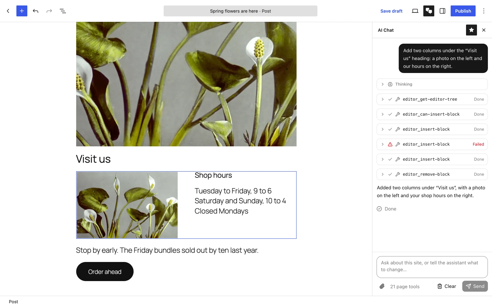

Say what you want. Watch the block editor do it.
Agentic Editor adds an AI Chat sidebar to the WordPress block editor. Describe a change in plain words and it rewrites, builds, rearranges and restyles the blocks in the post you have open, using the AI provider your site already has.

What it does
Ask for a change the way you'd ask a colleague. Each step shows up in the chat as it happens, and each edit lands in the editor like one you made yourself.
AI Chat beside your blocks
A sidebar in the post, page and site editors. Point it at a block with the paperclip, or describe what you mean, and it gets to work on the live post.
Knows how blocks work
Editor tools cover reading the post, adding, moving, restyling and converting blocks, reusing your patterns and finding images in the Media Library. It can generate images too when your provider supports it.
Open to browser agents
The same tools are published through WebMCP, so any browser AI agent that supports it can work in the editor too. A polyfill covers browsers without native support.
You stay in control
The assistant plays by the same rules you do, and it asks before doing anything Undo can't take back.
Get started
Download the plugin, upload it to your site, and connect an AI provider if you haven't already.
Installation instructionsAbout two minutes
Before you start
Install the plugin
- Download
agentic-editor.zip. Leave it zipped. - In wp-admin, go to Plugins → Add New Plugin and click Upload Plugin.
- Choose the zip file, click Install Now, then Activate Plugin.
Connect an AI provider
- Go to Settings → Connectors.
- Set up a provider, such as Google, OpenAI or Anthropic, with its API key.
Skip this if your site already has one. Without a provider, the chat opens but explains that it can't answer yet.
Try it
- Open any post or page in the block editor.
- Click the AI Chat button (two speech bubbles) in the top toolbar.
- Ask it to “Summarize the blocks in this post.” The user guide covers the rest.
Or use WP-CLI
wp plugin install https://github.com/wpscholar/agentic-editor/releases/latest/download/agentic-editor.zip --activate
Updates
Once installed, new releases appear on the Plugins screen and update like any other plugin. There's nothing more to download by hand.